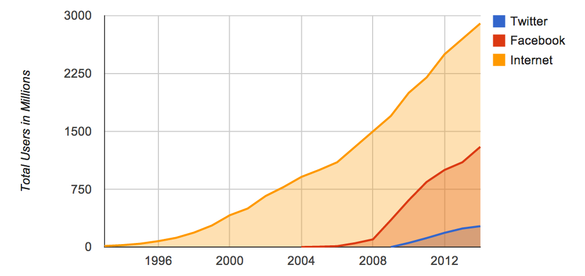
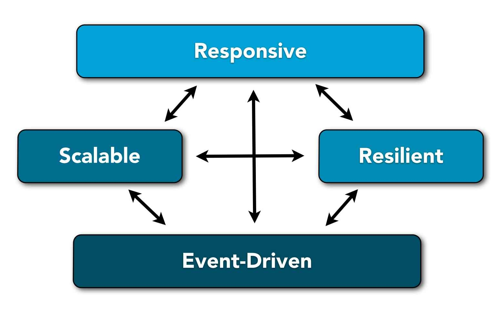

Reactive Programming
Introducción
Guillermo Polito / @gpolito
Motivación
Los requerimientos cambiaron...
| 2004 | 2014 | |
|---|---|---|
| Server nodes | 10's | 1000's |
| Response times | seconds | milliseconds |
| Maintenance downtimes | hours | none |
| Data volume | GBs | TBs -> PBs |
Motivación
www.internetlivestats.comMotivación
Más numeros
... en 2005 ...
- Internet: 1000 milliones de usuarios
- Nacía YouTube (febrero 2005)
- Twitter existía (2006)
Motivación
Más numeros
... en 2014 ...
- Internet: 2950 millones de usuarios (10/09/2014)
- Facebook: 1300 milliones de usuarios
- Twitter: 270 milliones de usuarios
Motivación
Un solo sitio es capaz de manejar la misma cantidad de tráfico que existía en toda Internet hace menos de una década. ... nuevas arquitecturas son necesarias ...
- ya que estamos teniendo problemas para escalar...
- el software es muy importante en estos dias...
- los paradigmas definidos en el pasado no escalan en el presente y tampoco en el futuro
Reactive Applications Traits
pequeña muestra de compañias "reactivas"
Responsive
“A responsive system is quick to react to all users — under blue skies and grey skies — in order to ensure a consistently positive user experience.”
Responsive
- no confundir con Web Responsive Design
- depende los reactive traits: Resilience and Scalabilty
Resilient
“The ability of a sustance or object to spring back into shape.”
“The capacity to recover quickly from difficulties.”
Merriam Webster
Resilient
los sistemas deben ser capaces de recuperarse de diferentes errores:
- errores internos al sistema
- errores en hardware
- errores en la red
- errores con servicios externos (las aplicaciones de hoy en día dependen de 10, 20 o mas!)
Resilient
- sorprendentemente este requerimiento es largamente ignorado o relegado a para "más adelante" utilizando técnicas "ad-hoc"
- las aplicaciones deben ser "resilient" en su núcleo y demás niveles
Failure Recovery en Java/C/C# etc...
- se realiza manejo de errores explicitamente DENTRO DE CADA THREAD
- los errores no se propagan entre los threads, por lo cual NO HAY FORMA DE SABER SI ALGO HA FALLANDO
- esto nos lleva a programar de forma defensiva...
- con manejo de errores MEZCLADOS con lógica de negocio
- esparcidos por TODO EL CÓDIGO
Failure Recovery - THE RIGHT WAY
Bulkheads
Failure Recovery - THE RIGHT WAY
- aislar la falla
- compartimentizarla
- manejarlas localmente
- evitar fallas en cascada
todo esto junto con SUPERVISORES
Bulkheads + Supervisores
- definir procesos aislados y livianos (en compartimientos)
- supervisar estos procesos:
- la semántica deber ser la misma para procesos locales o remotos
- de esta manera, se desacopla el manejo de errores de la lógica de negocio
- cada proceso tiene un proceso supervisor padre
- cada error es capturado y enviado como evento (async) al supervisor
- el supervisor maneja las fallas - puediendo matar, reiniciar, suspender/reaundar el proceso
soportado en el paradigma de actores... (lo veremos mas adelante)
Message-driven Resiliency
- Isolation:
- Location Transparency:
- Dedicated separate error channel:
- necesario para que un sistema se pueda auto-recuperar
- fallo en un componente aislado no impacta el responsiveness de todo el sistema, dando chance además para que se auto-recupere
permite trabajar con referencias a componentes, independientemente de si éstos están deployados en el mismo nodo o no
permite redireccionar una señal de error a un lugar específico, en lugar de reenviarla al proceso 'llamante'
Scalable
“capable of being easily expanded or upgraded on demand.”
Merriam Webster
Scalability
Qué significa?
- capacidad de expandirse/contraerse de acuerdo a su uso
- es necesario hacer elásticas las aplicaciones bajo demanda, permitiendo:
- agregar o quitar nodos- scale out/in
- obtener o liberar CPUs en cada nodo - scale up/down
Scalability
Por qué es necesario?
- por ejemplo: en el dominio eCommerce:
- los picos de tráfico mas altos se dan cuando cuando estás vendiendo bien
- durante un pico de tráfico la gente basicamente quiere darte su dinero :)
Scalability
Cómo lo logramos?
- primero se debe elegir el paradigma a utilizar...
- ... y luego el/los lenguaje/s y las herramientas sobre las que se va a construir
- usualmente se hace lo contrario, y una vez que las decisiones técnicas están tomadas es muy dificil de revertir el cambio de paradigma
Scalability
Modelos de Concurrencia
- Threads-based Concurrency and Shared Memory
- Message-driven Concurrency
Scalability
Modelos de Concurrencia
Threads-based Concurrency and Shared Memory
- frameworks MVC populares como Ruby on Rails son thread-based.
- comparten estado/datos mutables
- un thread por request
- acceso concurrente a datos mutables (variables y objetos) mutuo excluidos con locks y otros complicados mecanismos de sincronización
- thread safety: dificil de testear y asegurar
Ley de Amdahl

Scalability
Modelos de Concurrencia
Message-driven Concurrency
- sistemas orientados a eventos basados en pasaje de mensajes asincrónicos permiten:
- bajo acoplamiento e indepenencia de localización (location transparency) entre componentes
- scale out del sistema hacia otros nodos, agregando instancias para incrementar el procesamiento de los eventos
- scale up del sistema hacia otros cores, agregando instancias para incrementar el procesamiento de los eventos
- scale up & scale out: no tienen diferencias a nivel de código! la topología del sistema se configura aparte
Event Driven
“The flow of the program is determined by events.”
Wikipedia
Referencias
Kevin Webber - What is Reactive Programming?
Jonas Boner - Go Reactive: Event-Driven, Scalable, Resilient & Responsive Systems
Fragmented Views
Hit the next arrow...
... to step through ...
any type- of view
- fragments
Vertical Slides
Slides can be nested inside of other slides, try pressing down.
Basement Level 1
Press down or up to navigate.
Basement Level 2
Cornify

Basement Level 3
That's it, time to go back up.
Slides
Not a coder? No problem. There's a fully-featured visual editor for authoring these, try it out at http://slid.es.
Point of View
Press ESC to enter the slide overview.
Hold down alt and click on any element to zoom in on it using zoom.js. Alt + click anywhere to zoom back out.
Works in Mobile Safari
Try it out! You can swipe through the slides and pinch your way to the overview.
Marvelous Unordered List
- No order here
- Or here
- Or here
- Or here
Fantastic Ordered List
- One is smaller than...
- Two is smaller than...
- Three!
Transition Styles
You can select from different transitions, like:
Cube -
Page -
Concave -
Zoom -
Linear -
Fade -
None -
Default
Themes
Reveal.js comes with a few themes built in:
Default -
Sky -
Beige -
Simple -
Serif -
Night
Moon -
Solarized
* Theme demos are loaded after the presentation which leads to flicker. In production you should load your theme in the <head> using a <link>.
Global State
Set data-state="something" on a slide and "something"
will be added as a class to the document element when the slide is open. This lets you
apply broader style changes, like switching the background.
Custom Events
Additionally custom events can be triggered on a per slide basis by binding to the data-state name.
Reveal.addEventListener( 'customevent', function() {
console.log( '"customevent" has fired' );
} );
Slide Backgrounds
Set data-background="#007777" on a slide to change the full page background to the given color. All CSS color formats are supported.
Image Backgrounds
<section data-background="image.png">Repeated Image Backgrounds
<section data-background="image.png" data-background-repeat="repeat" data-background-size="100px">Background Transitions
Pass reveal.js the backgroundTransition: 'slide' config argument to make backgrounds slide rather than fade.
Background Transition Override
You can override background transitions per slide by using data-background-transition="slide".
Clever Quotes
These guys come in two forms, inline:
“The nice thing about standards is that there are so many to choose from”
and block:
“For years there has been a theory that millions of monkeys typing at random on millions of typewriters would reproduce the entire works of Shakespeare. The Internet has proven this theory to be untrue.”
Pretty Code
function linkify( selector ) {
if( supports3DTransforms ) {
var nodes = document.querySelectorAll( selector );
for( var i = 0, len = nodes.length; i < len; i++ ) {
var node = nodes[i];
if( !node.className ) {
node.className += ' roll';
}
}
}
}
Courtesy of highlight.js.
Intergalactic Interconnections
You can link between slides internally, like this.
Fragmented Views
Hit the next arrow...
... to step through ...
any type- of view
- fragments
Fragment Styles
There's a few styles of fragments, like:
grow
shrink
roll-in
fade-out
highlight-red
highlight-green
highlight-blue
current-visible
highlight-current-blue
Spectacular image!

Export to PDF
Presentations can be exported to PDF, below is an example that's been uploaded to SlideShare.
Take a Moment
Press b or period on your keyboard to enter the 'paused' mode. This mode is helpful when you want to take distracting slides off the screen during a presentation.